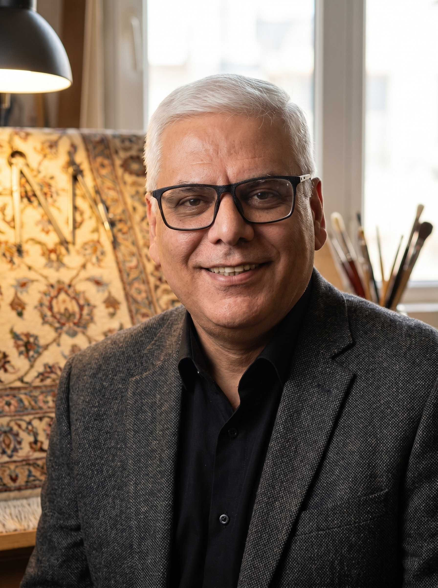

تکنیکهای عملی کارشناسی برای تشخیص ابریشم طبیعی
بررسی روشهای کارشناسی و تجربی برای تفکیک ابریشم خالص از الیاف مصنوعی در فرشهای آنتیک...
کارشناس رسمی دادگستری در رشته فرش
من دکتر محمدرضا نصیری، کارشناس رسمی دادگستری در رشته فرش و پژوهشگر این حوزه هستم. هدف این پایگاه علمی و تجاری، ارائه مشاورههای هوشمندانه، ارزیابیهای دقیق ساختاری و یاری رساندن به مجموعهداران و سرمایهگذاران برای اتخاذ تصمیمات درست در بازار فرش دستباف ایران است.

ارزیابی، قیمتگذاری عادلانه و صدور گواهیهای رسمی و قانونی اصالت برای انواع فرشهای دستباف، نفیس و صادراتی.
ارائه راهبردهای خرید هوشمندانه آثار ماندگار، شناسایی فرصتهای بازار و جلوگیری از ریسک خرید فرشهای تقلبی.
بررسی تخصصی متریال (تفکیک ابریشم طبیعی از مصنوعی)، آسیبشناسی الیاف و سبکشناسی فرشهای ایران از عهد صفویه تا زندیه.

بررسی روشهای کارشناسی و تجربی برای تفکیک ابریشم خالص از الیاف مصنوعی در فرشهای آنتیک...

تحلیلی بر چگونگی حفظ اصالت نقشهها و تحولات تاریخی کارگاههای سلطنتی ایران...
جهت هماهنگی برای ارزیابی مجموعهها، کارشناسی رسمی یا مشاورههای تخصصی، میتوانید از طریق ایمیل رسمی یا دایرکت اینستاگرام با من در ارتباط باشید.
📬 ایمیل: nasiricarpet@gmail.com | 🌐 لینکترک: nasiricarpet
📥 جهت درخواست کارشناسی آنلاین، کلمه «مشاوره» را در اینستاگرام دایرکت کنید.
پیج ما را در اینستاگرام دنبال کنید